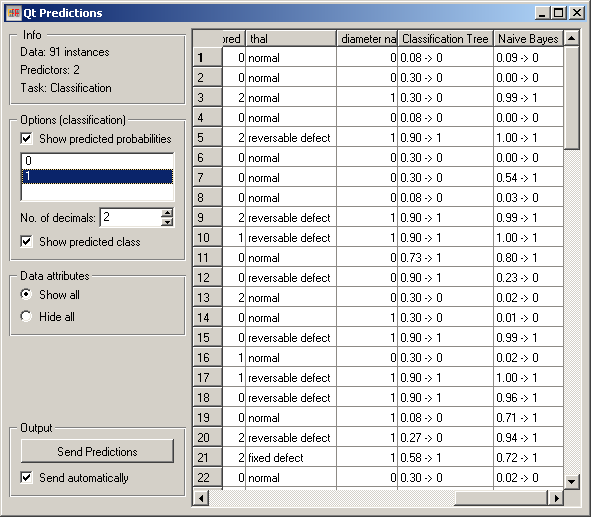
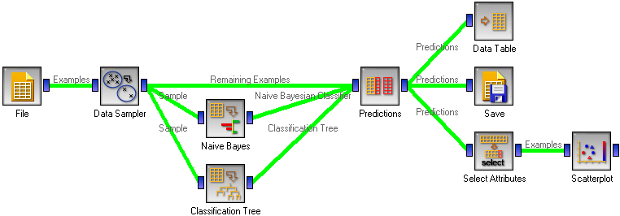
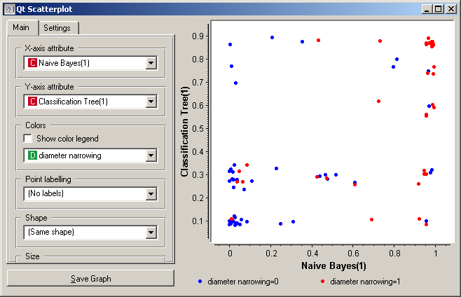

This is documentation for Orange 2.7. For the latest documentation, see Orange 3.
Predictions¶

Shows the model’s prediction on data.
Signals¶
- Inputs:
- Data (ExampleTable)
Data to be classified
- Predictors (orange.Classifier)
Predictors to be used on the data; multiple widget can connect to this slot
- Outputs:
- Predictions (orange.ExampleTable)
Original example table with added predictions
Description¶
The widget gets a data set and one or more predictors (classifiers, not learning algorithms - see the example below). It shows a table with the data and the predictions made.
Despite its simplicity, the widget allows for quite interesting analysis of decisions of predictive models; there is a simple demonstration at the end of the page. Note also, however, the related widget Confusion Matrix. Although many things can be done with any of them, there are tasks for which one of them might be much more convenient than the other.
The widget can show class predictions (Show predicted class) and predicted probabilities for the selected classes (Show predicted probabilities, the classes are selected below).
By default, the widget also shows the attributes. This can be disabled by checking Hide all under Data Attributes.
The output of the widget is another data table, where predictions are appended as new meta attributes. The table is output either automatically (Send automatically) or upon clicking Send Predictions.
Example¶
Here is a demonstration.
First, compare the schema with the one for Test Learners. Widgets representing learning algorithms, like Naive Bayesian Learner or Classification Tree Learner provide two kinds of signals, one with a learning algorithm and one with a classifier, that is, a result of the learning algorithm when it is given some data. The learner is available always, while for outputting a classifier, the widget representing a learning algorithm needs to be given some data.
Test Learners tests learning algorithms, hence it expects learning algorithms on the input. In the corresponding schema, we gave the Test Learners some data from the File widget and a few “learner widgets”. Widget Predictions shows predictions of a classifier, hence it needs a classifier and data. To get a classifier from the learner widget, the widget needs to be given data.
This is hence what we do: we randomly split the data into two subsets. The larger, containing 70 % of data instances, is given to Naive Bayes and Classification tree, so they can produce the corresponding classifiers. The classifiers go into Predictions, among with the remaining 30 % of the data. Predictions shows how these examples are classified.
The results of this procedure on the heart disease data are shown in the snapshot at beginning of the page. The last three columns are the actual class, and the predictions by the classification tree and naive Bayesian classifier. For the latter two we see the probability of class “1” (since this is the class chosen on the left-hand side of the widget) and the predicted class.
The schema also shows a few things we can do with the data from the widget. First, we can observe it in a Data Table. It shows a similar view to the one in Predictions, except that the probabilities are shown as separate attributes, so we can sort the examples by them and so on.
To save the predictions, we simply attach the Save widget to Predictions.
Finally, we can analyze the classifier’s predictions. For instance, we want to observe the relations between probabilities predicted by the two classifiers with respect to the class. For that, we first take Select Attributes with which we move the meta attributes with probability predictions to ordinary attributes. The transformed data is then given to the Scatter Plot, which we set to use the attributes with probabilities for the x and y axes, and the class is (as already by default) used to color the data points.
To get the above plot, we added 5% jittering to continuous attributes, since the classification tree gives just a few distinct probabilities, hence without jittering there would be too much overlap between the points.
The blue points at the bottom left represent the people with no diameter narrowing, which were correctly classified by both classifiers. The upper left red points represent the patients with narrowed vessels, which were correctly classified by both. At the top left there are a few blue points: these are those without narrowed vessels to whom the tree gave a high probability of having the disease, while Bayesian classifier was right by predicting a low probability of the disease. In the opposite corner, we can spot red points, that is, the sick, to which the tree gave a low probability, while the naive Bayesian classifier was (again) right by assigning a high probability of having the disease.
Note that this analysis is done on a rather small sample, so these conclusions may be ungrounded.
Another example of using this widget is given in the documentation for widget Confusion Matrix.